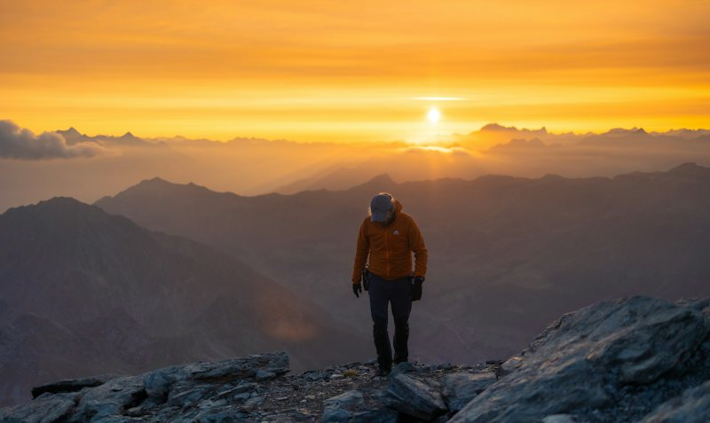
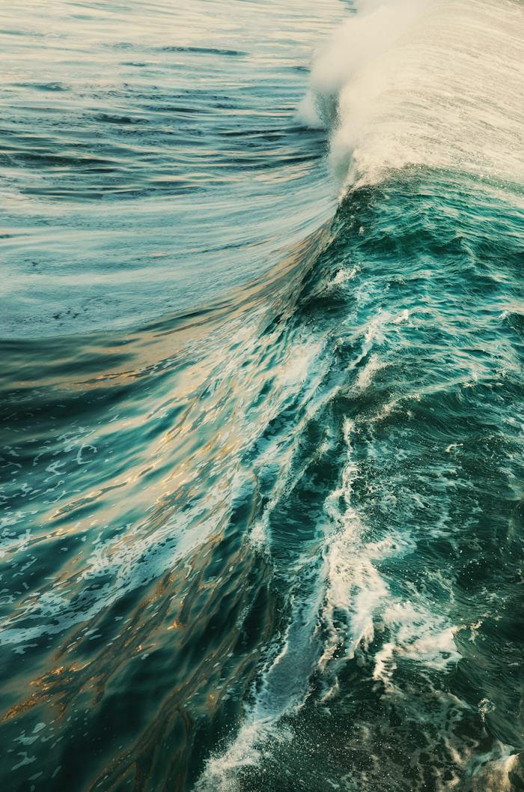
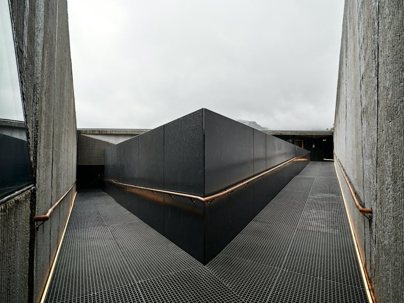

01 / 看懂画面

画面解析人物
山川
AI 自动生成
日出时分，徒步者走过山脊。
看懂画面，自动打标。
让中文标签与摘要，替你记住每一帧。
用画面收纳灵感，用标签重新遇见。
一个安静好用、更懂视频的本地素材库。
v0.3.1 · Windows x64
不必记住文件名，跟着画面的线索找。
试试关键词搜索，或者切换到 ClipDen 的标签拼片。
视频和标签可点击切换，也可用左右方向键切换。
试试“山川”“城市”或“海岸”。
8 段素材
从随手收藏，到再次用上。
把整理交给 ClipDen，把注意力留给创作。

画面解析日出时分，徒步者走过山脊。
让中文标签与摘要，替你记住每一帧。
Shift 拖入，继续手头的创作。


文件留在本地，AI 用你选择的方式。
Shift 拖入，灵感就位。
配置模型，自动生成中文标签与摘要。
搜索关键词，找到恰好的那一帧。
不会。ClipDen 记录视频的原路径，在本地保存封面、标签和摘要，原视频仍留在原来的位置。移动文件后，可以在属性栏重新关联。
使用本地模型时，请求只发送到本机的 Ollama。使用云端模型时，所选服务会收到文件名和最多六张抽取的画面，不会上传完整视频。具体数据处理方式取决于你的模型服务。
下载并启用本地 Qwen 视觉模型后，可以离线打标，速度取决于电脑配置。也支持云端视觉模型 API 和自定义兼容服务，云端 API 的费用由所选服务决定。
支持 MP4、MOV、M4V、AVI、MKV 和 WebM。部分编码的预览能力取决于系统环境，也可以双击视频，使用系统默认播放器打开。
目前支持 Windows x64。Mac 版会根据用户需求评估；如果有较多用户希望使用，我们会考虑开发，目前还没有确定的推出时间。
专注视频创作者，文件源路径不搬家，AI 自动打标，自然语言找视频。